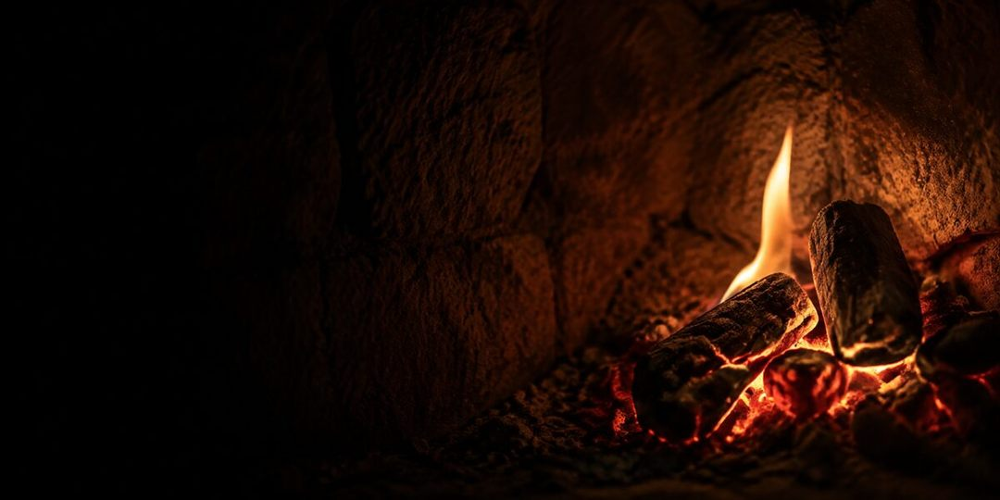
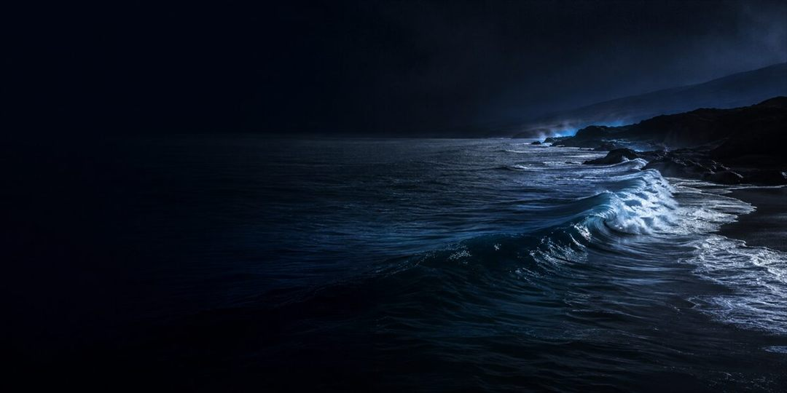
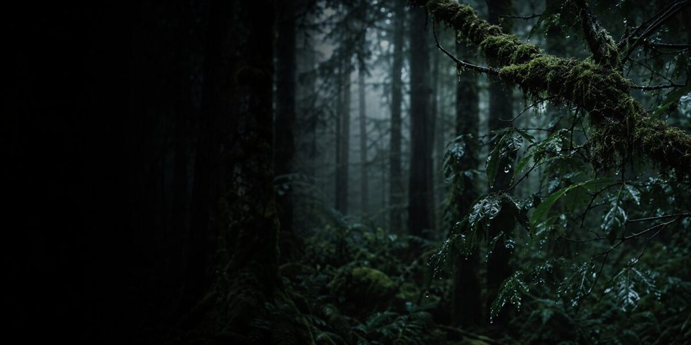

Açık tema görselleri
Üst sıra: uygulamadaki mevcut açık görseller. Alt sıra: koyu görsellerden ışık ve renk işlenerek üretilen canlı gündüz versiyonu.
Ateş
Okyanus
Orman
528 Hz
Şimdikisoluk, gri
 Ateş
Ateş Okyanus
Okyanus Orman
Orman 528 Hz
528 HzCanlısıcak, renkli

Ateş
Okyanus
Orman528 Hz